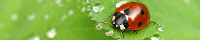

<nav class="docs-navbar">
  <a aria-label="Angular Material" class="docs-button mat-button" md-button="" routerlink="/" aria-disabled="false" tabindex="0"
    href="/"><span class="mat-button-wrapper">
    
    <span>Petite Coccinelle</span>
  </span><div class="mat-button-ripple mat-ripple" md-ripple=""></div><div class="mat-button-focus-overlay"></div></a>
  <a class="docs-button mat-button" md-button="" routerlink="components" aria-disabled="false" tabindex="0" href="/components"><span class="mat-button-wrapper">Components</span>
    <div class="mat-button-ripple mat-ripple" md-ripple=""></div>
    <div class="mat-button-focus-overlay"></div>
  </a>
  <a class="docs-button mat-button" md-button="" routerlink="guides" aria-disabled="false" tabindex="0" href="/guides"><span class="mat-button-wrapper">Guides</span>
    <div class="mat-button-ripple mat-ripple" md-ripple=""></div>
    <div class="mat-button-focus-overlay"></div>
  </a>
  <div class="flex-spacer"></div>

  <a aria-label="GitHub Repository" class="docs-button mat-button" href="https://github.com/angular/material2" md-button=""
    aria-disabled="false" tabindex="0"><span class="mat-button-wrapper">
    
    GitHub
  </span><div class="mat-button-ripple mat-ripple" md-ripple=""></div><div class="mat-button-focus-overlay"></div></a>
</nav>